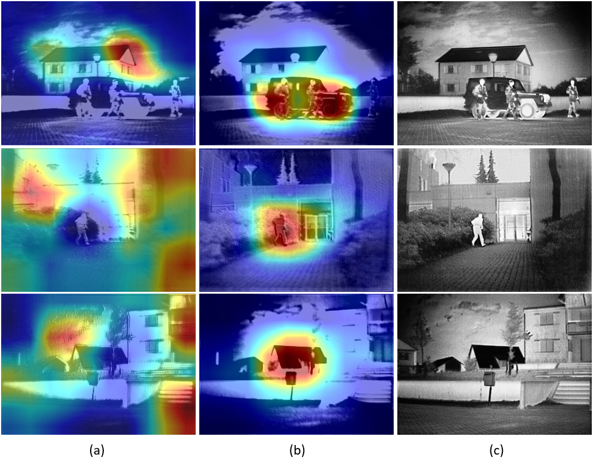

MACFuse: Multi-level Attention-guided Contrastive Learning for Infrared and Visible Image Fusion
The codes are also available.
Contributions
- The proposed dual attention strategy can obtain effective visible and infrared features to intensify the fusion of favorable features, by adopting global attention mechanism.
- To the best of our knowledge, we are the first to introduce contrastive learning to image fusion. By utilizing the mask-based contrastive guidance, the fused image can make use of both rich details from visible images and bright target information from infrared images, thus rendering superior saliency with vivid texture details.
- To guide the optimization of our network, a self-adaptive loss is devised, which automatically adapts to the characteristics of source images in the training phase.
Overall Architecture
Expermental Settings
Datasets
The infrared and visible image pairs we utilize to showcase the prevelege of our method are collected from the TNO and the RoadScene, which are publicly available. The above mentioned datasets are clarified below.Training details
Our entire fusion framework is trained on the TNO dataset through two phases: training and finetuing. In the traing stage, We first select 46 pairs of images and convert them to grayscale ones. To make full use of the gradient and entropy of each image in the proposed self-adaptive training, we crop 1410 patches of size 64*64 from them. Then, the training patches are normalized to [-1, 1] and fed into our network. We apply Adam as the optimizer and set the learning rate to 0.0001. The batch size is 10 and the epoch in this phase is 10. In the finetuning phase, we adopt 18 images with salient masks from TNO, and crop them into 1410 images of size 64*64 as we do in the training stage. For the contrastive learning, we use one positive sample with three negative samples (one corresponded with the positive patch and two ramdomly picked up from other negative patches). The network is finetuned for 5 epochs, the optimizer, learning rate and batch size settings are the same as that in the training phase. .Representative Results

Visualization of the proposed attention module

Reach me
E-mail: junko.lin@yahoo.com
Acknowledgement
This work is partially supported by the National Natural Science Foundation of China (Nos. 61922019, 61733002, 61672125, and 61772105), LiaoNing Revitalization Talents Program (XLYC1807088), and the Fundamental Research Funds for the Central Universities.